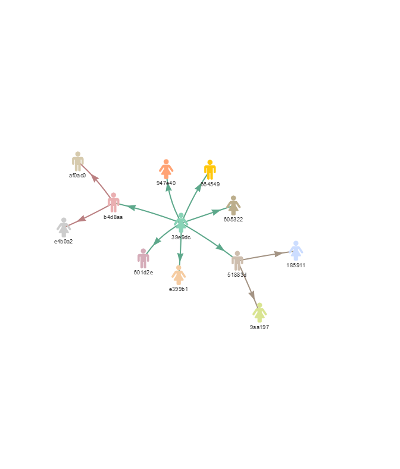
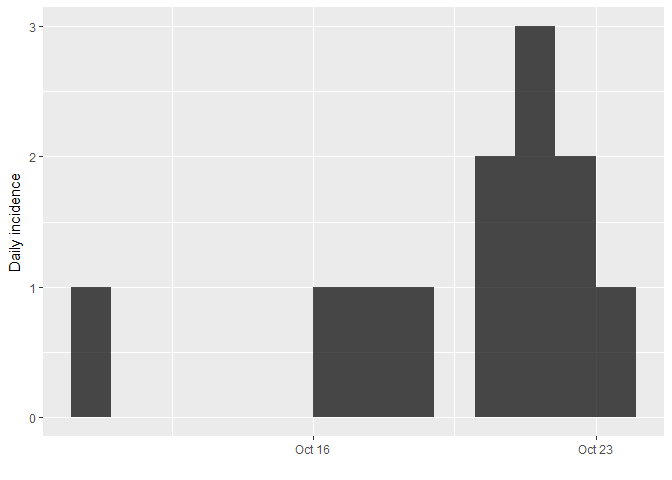
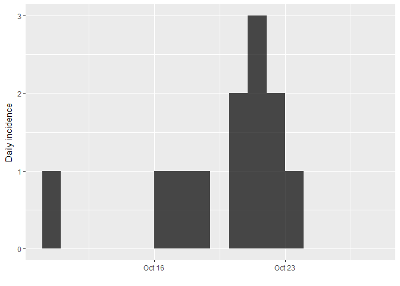
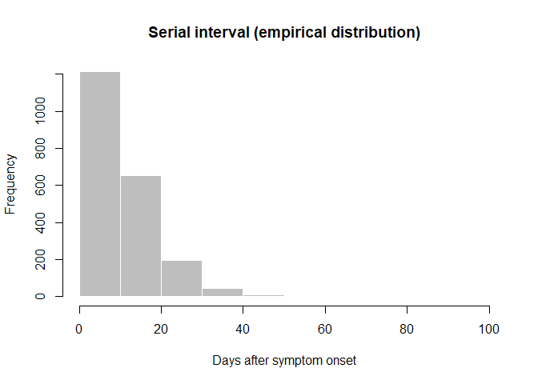
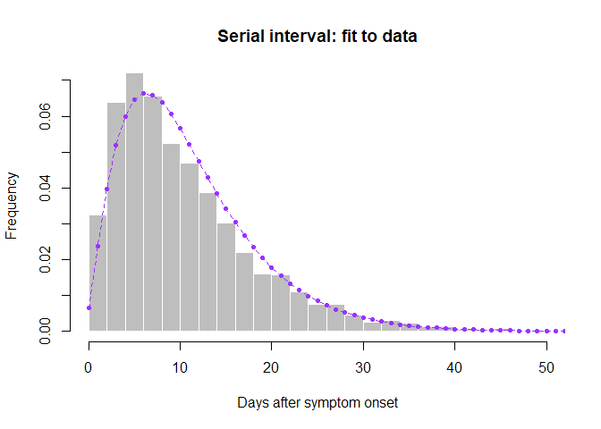
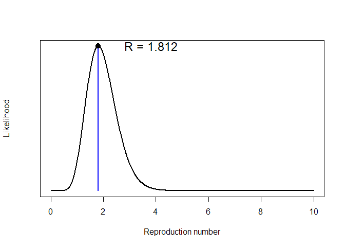
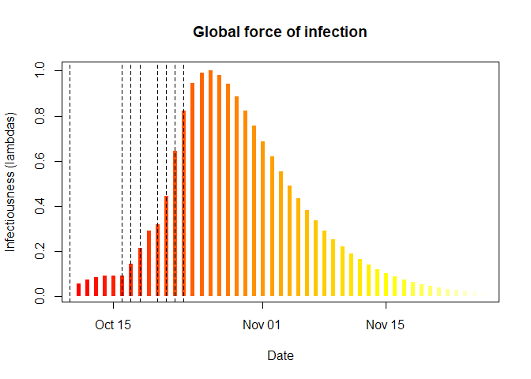
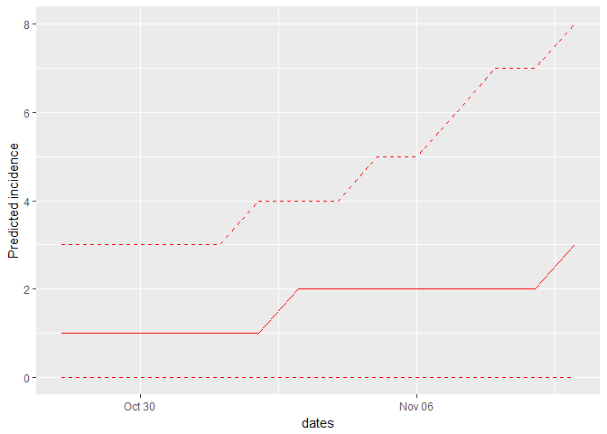

Ebola simulation part 1: early outbreak assessment
This practical simulates the early assessment and reconstruction of an Ebola Virus Disease (EVD) outbreak. It introduces various aspects of analysis of the early stage of an outbreak, including contact tracing data, epicurves, growth rate estimation from log-linear models, and more refined estimates of transmissibility. A follow-up practical will provide an introduction to transmission chain reconstruction using outbreaker2.
A novel EVD outbreak in Ankh, Republic of Morporkia
A new EVD outbreak has been notified in the small city of Ankh, located in the Northern, rural district of the Republic of Morporkia. Public Health Morporkia (PHM) is in charge of coordinating the outbreak response, and have contracted you as a consultant in epidemics analysis to inform the response in real time.
Required packages
The following packages, available on CRAN, are needed for this case study:
xlsxto read.xlsxfilesoutbreaksfor some other outbreak dataincidencefor epicurvesepicontactsfor contact data visualisationdistcreteto obtain discretised delay distributionsepitrixto fit discretised Gamma distributionsearlyRto estimate R0projectionsfor short term forecasting
To install these packages, use install.packages, e.g.:
install.packages("xlsx")
install.packages("outbreaks")
install.packages("incidence")
install.packages("epicontacts")
install.packages("distcrete")
install.packages("epitrix")
install.packages("earlyR")
install.packages("projections")
Early data
While a new data update is pending, you have been given the following linelist and contact data, from the early stages of the outbreak:
PHM-EVD-linelist-2017-10-27.xlsx: a linelist containing case information up to the 27th October 2017
PHM-EVD-contacts-2017-10-27.xlsx: a list of contacts reported between cases up to the 27th October 2017, where
fromindicates a potential source of infection, andtothe recipient of the contact.
To read into R, download these files and use the function read.xlsx()
from the xlsx package to import the data. Each import will create a
data.frame. Call the first one linelist, and the second one
contacts. For instance, you first command line could look like:
linelist <- xlsx::read.xlsx("PHM-EVD-linelist-2017-10-27.xlsx", sheetIndex = 1)
Once imported, the data should look like:
## linelist: one line per case
linelist
## id onset sex age
## 1 39e9dc 2017-10-10 female 62
## 2 664549 2017-10-16 male 28
## 3 b4d8aa 2017-10-17 male 54
## 4 51883d 2017-10-18 male 57
## 5 947e40 2017-10-20 female 23
## 6 9aa197 2017-10-20 female 66
## 7 e4b0a2 2017-10-21 female 13
## 8 af0ac0 2017-10-21 male 10
## 9 185911 2017-10-21 female 34
## 10 601d2e 2017-10-22 male 11
## 11 605322 2017-10-22 female 23
## 12 e399b1 2017-10-23 female 23
## contacts: pairs of cases with reported contacts
contacts
## from to
## 1 51883d 185911
## 2 b4d8aa e4b0a2
## 3 39e9dc b4d8aa
## 4 39e9dc 601d2e
## 5 51883d 9aa197
## 6 39e9dc 51883d
## 7 39e9dc e399b1
## 8 b4d8aa af0ac0
## 9 39e9dc 947e40
## 10 39e9dc 664549
## 11 39e9dc 605322
Descriptive analyses
A first look at contacts
Contact tracing is at the centre of an Ebola outbreak response. Using
the function make_epicontacts in the epicontacts package, create a
new epicontacts object called x. The result should look like:
x
##
## /// Epidemiological Contacts //
##
## // class: epicontacts
## // 12 cases in linelist; 11 contacts; directed
##
## // linelist
##
## # A tibble: 12 x 4
## id onset sex age
## * <chr> <date> <fct> <dbl>
## 1 39e9dc 2017-10-10 female 62.
## 2 664549 2017-10-16 male 28.
## 3 b4d8aa 2017-10-17 male 54.
## 4 51883d 2017-10-18 male 57.
## 5 947e40 2017-10-20 female 23.
## 6 9aa197 2017-10-20 female 66.
## 7 e4b0a2 2017-10-21 female 13.
## 8 af0ac0 2017-10-21 male 10.
## 9 185911 2017-10-21 female 34.
## 10 601d2e 2017-10-22 male 11.
## 11 605322 2017-10-22 female 23.
## 12 e399b1 2017-10-23 female 23.
##
## // contacts
##
## # A tibble: 11 x 2
## from to
## <chr> <chr>
## 1 51883d 185911
## 2 b4d8aa e4b0a2
## 3 39e9dc b4d8aa
## 4 39e9dc 601d2e
## 5 51883d 9aa197
## 6 39e9dc 51883d
## 7 39e9dc e399b1
## 8 b4d8aa af0ac0
## 9 39e9dc 947e40
## 10 39e9dc 664549
## 11 39e9dc 605322
You can easily plot these contacts, but with a little bit of tweaking
(see ?vis_epicontacts) you can customise shapes by gender:
plot(x, node_shape = "sex", shapes = c(male = "male", female = "female"), selector = FALSE)

What can you say about these contacts?
Looking at incidence curves
The first question PHM asks you is simply: how bad is it?. Given that this is a terrible disease, with a mortality rate nearing 70%, there is a lot of concern about this outbreak getting out of control. The first step of the analysis lies in drawing an epicurve, i.e. an plot of incidence over time.
Using the package incidence, compute daily incidence based on the
dates of symptom onset. Store the result in an object called i; the
result should look like:
i
## <incidence object>
## [12 cases from days 2017-10-10 to 2017-10-23]
##
## $counts: matrix with 14 rows and 1 columns
## $n: 12 cases in total
## $dates: 14 dates marking the left-side of bins
## $interval: 1 day
## $timespan: 14 days
plot(i)

If you pay close attention to the dates on the x-axis, you may notice
that something is missing. Indeed, the graph stops right after the last
case, while the data should be complete until the 27th October 2017. You
can remedy this using the argument last_date in the incidence
function:
i <- incidence(linelist$onset, last_date = as.Date("2017-10-27"))
i
## <incidence object>
## [12 cases from days 2017-10-10 to 2017-10-27]
##
## $counts: matrix with 18 rows and 1 columns
## $n: 12 cases in total
## $dates: 18 dates marking the left-side of bins
## $interval: 1 day
## $timespan: 18 days
plot(i)

Statistical analyses
Log-linear model
The simplest model of incidence is probably the log-linear model, i.e. a
linear regression on log-transformed incidences. In the incidence
package, the function fit will estimate the parameters of this model
from an incidence object (here, i). Apply it to the data and store the
result in a new object called f. You can print f to derive estimates
of the growth rate r and the doubling time, and add the corresponding
model to the incidence plot:
f <- fit(i)
## Warning in fit(i): 10 dates with incidence of 0 ignored for fitting
f
## <incidence_fit object>
##
## $lm: regression of log-incidence over time
##
## $info: list containing the following items:
## $r (daily growth rate):
## [1] 0.05352107
##
## $r.conf (confidence interval):
## 2.5 % 97.5 %
## [1,] -0.0390633 0.1461054
##
## $doubling (doubling time in days):
## [1] 12.95092
##
## $doubling.conf (confidence interval):
## 2.5 % 97.5 %
## [1,] 4.744158 -17.74421
##
## $pred: data.frame of incidence predictions (8 rows, 5 columns)
plot(i, fit = f)
How would you interpret this result?What criticism would you make on this model?
Estimation of transmissibility (R)
Branching process model
The transmissibility of the disease can be assessed through the estimation of the reproduction number R, defined as the number of expected secondary cases per infected case. In the early stages of an outbreak, and assuming no immunity in the population, this quantity is also the basic reproduction number R0, i.e. R in a fully susceptible population.
The package earlyR implements a simple maximum-likelihood estimation
of R, using dates of onset of symptoms and information on the serial
interval distribution. It is a simpler but less flexible version of the
model by Cori et al (2013, AJE 178: 1505–1512) implemented in
EpiEstim.
Briefly, earlyR uses a simple model describing incidence on a given
day as a Poisson process determined by a global force of infection on
that day:
xt ∼ 𝒫(λt)
where xt is the incidence (based on symptom onset) on day t and λt is the force of infection. Noting R the reproduction number and w() the discrete serial interval distribution, we have:
$$ \lambda_t = R * \sum_{s=1}^t x_s w(t - s) $$
The likelihood (probability of observing the data given the model and parameters) is defined as a function of R:
$$ \mathcal{L}(x) = p(x | R) = \prod_{t=1}^T F_{\mathcal{P}}(x_t, \lambda_t) $$
where F𝒫 is the Poisson probability mass function.
Estimating the serial interval from older data
As current data are insufficient to estimate the serial interval
distribution, some colleague recommends using data from a past outbreak
stored in the outbreaks package, as the dataset ebola_sim_clean.
Load this dataset, and create a new epicontacts object as before,
without plotting it (it is a much larger dataset). Store the new object
as old_evd; the output should look like:
old_evd
##
## /// Epidemiological Contacts //
##
## // class: epicontacts
## // 5,829 cases in linelist; 3,800 contacts; directed
##
## // linelist
##
## # A tibble: 5,829 x 9
## id generation date_of_infection date_of_onset date_of_hospitalisat~
## * <chr> <int> <date> <date> <date>
## 1 d1fafd 0 NA 2014-04-07 2014-04-17
## 2 53371b 1 2014-04-09 2014-04-15 2014-04-20
## 3 f5c3d8 1 2014-04-18 2014-04-21 2014-04-25
## 4 6c286a 2 NA 2014-04-27 2014-04-27
## 5 0f58c4 2 2014-04-22 2014-04-26 2014-04-29
## 6 49731d 0 2014-03-19 2014-04-25 2014-05-02
## 7 f9149b 3 NA 2014-05-03 2014-05-04
## 8 881bd4 3 2014-04-26 2014-05-01 2014-05-05
## 9 e66fa4 2 NA 2014-04-21 2014-05-06
## 10 20b688 3 NA 2014-05-05 2014-05-06
## # ... with 5,819 more rows, and 4 more variables: date_of_outcome <date>,
## # outcome <fct>, gender <fct>, hospital <fct>
##
## // contacts
##
## # A tibble: 3,800 x 3
## from to source
## * <chr> <chr> <fct>
## 1 d1fafd 53371b other
## 2 cac51e f5c3d8 funeral
## 3 f5c3d8 0f58c4 other
## 4 0f58c4 881bd4 other
## 5 8508df 40ae5f other
## 6 127d83 f547d6 funeral
## 7 f5c3d8 d58402 other
## 8 20b688 d8a13d other
## 9 2ae019 a3c8b8 other
## 10 20b688 974bc1 other
## # ... with 3,790 more rows
The function get_pairwise can be used to extract pairwise features of
contacts based on attributes of the linelist. For instance, it could be
used to test for assortativity, but also to compute delays between
connected cases. Here, we use it to extract the serial interval:
old_si <- get_pairwise(old_evd, "date_of_onset")
summary(old_si)
## Min. 1st Qu. Median Mean 3rd Qu. Max. NA's
## 1.00 5.00 9.00 11.06 15.00 99.00 1684
old_si <- na.omit(old_si)
summary(old_si)
## Min. 1st Qu. Median Mean 3rd Qu. Max.
## 1.00 5.00 9.00 11.06 15.00 99.00
hist(old_si, xlab = "Days after symptom onset", ylab = "Frequency",
main = "Serial interval (empirical distribution)",
col = "grey", border = "white")

What do you think of this distribution?
Make the adjustments you deem necessary, and then use the function
fit_disc_gamma from the package epitrix to fit a discretised Gamma
distribution to these data. Your results should approximately look like:
si_fit <- fit_disc_gamma(old_si)
si_fit
## $mu
## [1] 11.48373
##
## $cv
## [1] 0.6429561
##
## $sd
## [1] 7.383534
##
## $ll
## [1] -6905.588
##
## $converged
## [1] TRUE
##
## $distribution
## A discrete distribution
## name: gamma
## parameters:
## shape: 2.41900859135364
## scale: 4.74728799288241
Now that you know how to parametrise a discretised Gamma distribution
matching previous data on the serial interval, create this distribution
using the function distcrete from the similarly named package. Specify
make sure you use daily intervals for the discretisation, and use
w = 0 to indicate dates should be floored to the day. Store the ouput
in an object called si. Your results should look like:
## Warning: package 'distcrete' was built under R version 3.4.4
si
## A discrete distribution
## name: gamma
## parameters:
## shape: 2.41900859135364
## scale: 4.74728799288241
## look at the fit
hist(old_si, xlab = "Days after symptom onset", ylab = "Frequency",
main = "Serial interval: fit to data", col = "grey", border = "white",
nclass = 30, ylim = c(0, 0.07), prob = TRUE)
points(0:60, si$d(0:60), col = "#9933ff", pch = 20)
points(0:60, si$d(0:60), col = "#9933ff", type = "l", lty = 2)

Would you trust this estimation of the generation time? How would you compare it to actual estimates from the West African EVD outbreak (WHO Ebola Response Team (2014) NEJM 371:1481–1495) with a mean of 15.3 days and a standard deviation 9.3 days?
Estimation of R0
Using the estimates of the mean and standard deviation of the serial
interval you just obtained, use the function get_R to estimate the
reproduction number, specifying a maximum R of 10 (see ?get_R) and
store the result in a new object R:
You can visualise the results as follows:
R
##
## /// Early estimate of reproduction number (R) //
## // class: earlyR, list
##
## // Maximum-Likelihood estimate of R ($R_ml):
## [1] 1.811812
##
##
## // $lambda:
## 0.04088711 0.05343783 0.06188455 0.06668495 0.06850099 0.0680082...
##
## // $dates:
## [1] "2017-10-11" "2017-10-12" "2017-10-13" "2017-10-14" "2017-10-15"
## [6] "2017-10-16"
## ...
##
## // $si (serial interval):
## A discrete distribution
## name: gamma
## parameters:
## shape: 2.41900859135364
## scale: 4.74728799288241
plot(R)

plot(R, "lambdas")
abline(v = linelist$onset, lty = 2)

The first figure shows the distribution of likely values of R, and the Maximum-Likelihood (ML) estimation. The second figure shows the global force of infection over time, with dashed bars indicating dates of onset of the cases.
Interpret these results: what do you make of the reproduction number?What does it reflect? Based on the last part of the epicurve, some colleagues suggest that incidence is going down and the outbreak may be under control. What is your opinion on this?
Short-term forecasting
The function project from the package projections can be used to
simulate plausible epidemic trajectories by simulating daily incidence
using the same branching process as the one used to estimate
R0 in earlyR. All that is needed is one or several values
of R0 and a serial interval distribution, stored as a
distcrete object.
Here, we illustrate how we can simulate 5 random trajectories using a fixed value of $R_0 = $1.81, the ML estimate of R0:
library(projections)
## Warning: package 'projections' was built under R version 3.4.4
project(i, R = R$R_ml, si = si, n_sim = 5, n_days = 10, R_fix_within = TRUE)
##
## /// Incidence projections //
##
## // class: projections, matrix
## // 10 dates (rows); 5 simulations (columns)
##
## // first rows/columns:
## [,1] [,2] [,3] [,4] [,5]
## 2017-10-28 0 2 0 0 0
## 2017-10-29 1 0 1 1 0
## 2017-10-30 1 2 0 4 1
## 2017-10-31 0 1 0 0 0
## .
## .
## .
##
## // dates:
## [1] "2017-10-28" "2017-10-29" "2017-10-30" "2017-10-31" "2017-11-01"
## [6] "2017-11-02" "2017-11-03" "2017-11-04" "2017-11-05" "2017-11-06"
Using the same principle, generate 1,000 trajectories for the next 2
weeks, using a range of plausible values of R0. Note that
you can use sample_R to obtain these values from your earlyR object.
Store your results in an object called proj. Plotting the results
should give something akin to:
plot(proj, c(.1,.9))

Interpret the following summary:
apply(proj, 1, summary)
## 2017-10-28 2017-10-29 2017-10-30 2017-10-31 2017-11-01 2017-11-02
## Min. 0.000 0.000 0.000 0.000 0.000 0.000
## 1st Qu. 0.000 0.000 0.000 0.000 1.000 1.000
## Median 1.000 1.000 1.000 1.000 1.000 1.000
## Mean 1.403 1.457 1.518 1.494 1.651 1.771
## 3rd Qu. 2.000 2.000 2.000 2.000 2.000 3.000
## Max. 7.000 6.000 8.000 10.000 10.000 13.000
## 2017-11-03 2017-11-04 2017-11-05 2017-11-06 2017-11-07 2017-11-08
## Min. 0.000 0.000 0.000 0.00 0.000 0.000
## 1st Qu. 1.000 1.000 1.000 1.00 1.000 1.000
## Median 2.000 2.000 2.000 2.00 2.000 2.000
## Mean 1.905 2.046 2.313 2.42 2.663 2.942
## 3rd Qu. 3.000 3.000 3.000 3.00 4.000 4.000
## Max. 12.000 11.000 25.000 26.00 27.000 20.000
## 2017-11-09 2017-11-10
## Min. 0.000 0.000
## 1st Qu. 1.000 1.000
## Median 2.000 3.000
## Mean 3.144 3.606
## 3rd Qu. 4.000 5.000
## Max. 25.000 27.000
apply(proj, 1, function(x) mean(x>0))
## 2017-10-28 2017-10-29 2017-10-30 2017-10-31 2017-11-01 2017-11-02
## 0.742 0.742 0.741 0.738 0.781 0.771
## 2017-11-03 2017-11-04 2017-11-05 2017-11-06 2017-11-07 2017-11-08
## 0.808 0.808 0.809 0.816 0.824 0.850
## 2017-11-09 2017-11-10
## 0.859 0.877
According to these results, what are the chances that more cases will appear in the near future?Is this outbreak being brought under control? Would you recommend scaling up / down the response?
Follow-up…
For a follow-up on this outbreak, have a look at the second part of this simulated response, which includes a data update, genetic sequences, and the use of outbreak reconstruction tools.
About this document
Contributors
- Thibaut Jombart: initial version
Contributions are welcome via pull requests. The source file is hosted on github.
Legal stuff
License: CC-BY Copyright: Thibaut Jombart, 2017